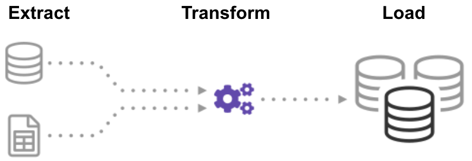

<!DOCTYPE html>
<html lang="en">
  <head>
    <meta charset="utf-8" />
    <meta name="viewport" content="width=device-width, initial-scale=1.0, maximum-scale=1.0, user-scalable=no" />

    <title>Automating and scaling data ingestion for boating</title>
    <link rel="shortcut icon" href="./favicon.ico" />
    <link rel="stylesheet" href="./dist/reset.css" />
    <link rel="stylesheet" href="./dist/reveal.css" />
    <link rel="stylesheet" href="./dist/theme/black.css" id="theme" />
    <link rel="stylesheet" href="./css/highlight/dark.css" />


  </head>
  <body>
    <div class="reveal">
      <div class="slides"><section  data-markdown><script type="text/template">


# Automating and scaling data ingestion for boating

Newcastle Cloud & DevOps 2022 - Jack McKew

* Challenges in data ingestion from many sources
* How we standardize data ingestion
* What happens after it's ingested?
</script></section><section  data-markdown><script type="text/template">
## Quick Note

This talk is open source: UPDATE_URL
</script></section><section  data-markdown><script type="text/template">
## Who am I

I'm Jack McKew, I'm a Snr software engineer at [Deckee](deckee.com/)

I absolutely love solving problems, especially to do with DevOps! 📊

I have a blog on software, technology and more over at [jackmckew.dev](https://jackmckew.dev/)

You can reach me on:

* Twitter: [@jac_mcq](https://twitter.com/jac_mcq)
* LinkedIn: [jack-mckew](https://www.linkedin.com/in/jack-mckew/)
* GitHub: [@JackMcKew](https://github.com/JackMcKew)
</script></section><section  data-markdown><script type="text/template">
## Projects I work on 👥 

I'm the creator & maintainer of open source packages such as:

* [Pandas_Alive](https://github.com/JackMcKew/pandas_alive)
* [awesome-python-bytes](https://github.com/JackMcKew/awesome-python-bytes)
* Numerous GitHub Actions:
    * [pyinstaller-action-windows](https://github.com/JackMcKew/pyinstaller-action-windows)
    * [pyinstaller-action-linux](https://github.com/JackMcKew/pyinstaller-action-linux)
    * [python-interrogate-check](https://github.com/JackMcKew/python-interrogate-check)
</script></section><section  data-markdown><script type="text/template">
## Who's Deckee

[Deckee](deckee.com/) is the free boating app for local information, trip logging, weather, navigation aids and official alerts and notices


</script></section><section  data-markdown><script type="text/template">
## Challenges in data ingestion from many sources


<aside class="notes"><p>Everything is always different and usually changes too</p>
</aside></script></section><section  data-markdown><script type="text/template">
## How we standardize data ingestion



Source: https://panoply.io/data-warehouse-guide/3-ways-to-build-an-etl-process/

<aside class="notes"><p>Talk about following the ETL pattern</p>
</aside></script></section><section  data-markdown><script type="text/template">
## Javascript implementation

<aside class="notes"><p>Show an integration and go through the abstractions</p>
</aside></script></section><section  data-markdown><script type="text/template">
## Orchestrating ingestions

<aside class="notes"><p>Go into how it&#39;s built as endpoints within microservices and curl cron jobs are used</p>
<h2 id="what-happens-after-its-ingested">What happens after it&#39;s ingested?</h2>
<ul>
<li>Map tiles</li>
<li>Markers</li>
</ul>
</aside></script></section><section  data-markdown><script type="text/template">
## What the user sees


</script></section><section  data-markdown><script type="text/template">
## Live Demo 😬
</script></section><section  data-markdown><script type="text/template">## That's all folks

Feel free to reach out to me on:

* My Blog: [jackmckew.dev](https://jackmckew.dev/)
* Twitter: [@jac_mcq](https://twitter.com/jac_mcq)
* LinkedIn: [jack-mckew](https://www.linkedin.com/in/jack-mckew/)
* GitHub: [@JackMcKew](https://github.com/JackMcKew)
</script></section></div>
    </div>

    <script src="./dist/reveal.js"></script>

    <script src="./plugin/markdown/markdown.js"></script>
    <script src="./plugin/highlight/highlight.js"></script>
    <script src="./plugin/zoom/zoom.js"></script>
    <script src="./plugin/notes/notes.js"></script>
    <script src="./plugin/math/math.js"></script>
    <script>
      function extend() {
        var target = {};
        for (var i = 0; i < arguments.length; i++) {
          var source = arguments[i];
          for (var key in source) {
            if (source.hasOwnProperty(key)) {
              target[key] = source[key];
            }
          }
        }
        return target;
      }

      // default options to init reveal.js
      var defaultOptions = {
        controls: true,
        progress: true,
        history: true,
        center: true,
        transition: 'default', // none/fade/slide/convex/concave/zoom
        plugins: [
          RevealMarkdown,
          RevealHighlight,
          RevealZoom,
          RevealNotes,
          RevealMath
        ]
      };

      // options from URL query string
      var queryOptions = Reveal().getQueryHash() || {};

      var options = extend(defaultOptions, {}, queryOptions);
    </script>


    <script>
      Reveal.initialize(options);
    </script>
  </body>
</html>
